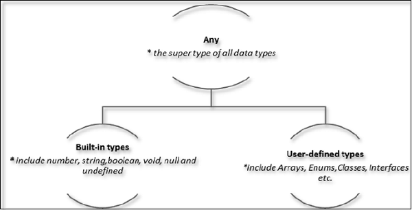

Node.js Basics
By Almog LaktiviIn This Module
Typescript 101
As fast as possible
Typescript vs Javascript
Types, Interfaces, Enums and decorators in Typescript
Modules & Node.js with Typescript
So what's the problem with JS anyway?
Javascript is awesome!

But, it's also...
function getUserById(id, connection, callback) {
return new Promise((resolve, reject) =>{
if(!id){
reject(new Error('user id is mandatory'));
}
connection.getCollection('users')
.then(function(usersCollection, err){
if(err){
reject(err);
}
usersCollection.find({_id: id}...)
});
});
}
Typescript rocks!
function getUserById(id: number, connection: MongoConnection): Promise {
try {
const usersCollection = await connection.getCollection('users');
return await usersCollection.find({_id: id}...)
} catch (error){
throw new Error(error.message);
}
}
What is Typescript?
TypeScript is a strongly typed, object oriented, compiled language
- TypeScript is just JavaScript
- JavaScript is TypeScript(sort of)
- TypeScript supports other JS libraries
- TypeScript is portable
- Aligned with the ECMAScript6 specification
features:
Type hirarchy
Types example
let name:string = "John";
let score1:number = 50;
let score2:number = 42.50;
let sum = score1 + score2;
storeNum(val:number):void {
let local_num = 14;
}
Any type
We may need to describe the type of variables that we do not know when we are writing an application.
let notSure: any = 4;
notSure = "maybe a string instead";
notSure = false;
Define your own types
interface IGreeter {
greeting: string,
greet()
}
class Greeter implements IGreeter {
greeting: string;
constructor(message: string) {
this.greeting = message;
}
greet() {
return "Hello, " + this.greeting;
}
}
//Shorter way:
class Person {
readonly numberOfLegs: number = 2;
constructor(private name: string, public last: string){}
}
let greeter = new Greeter("world");
Typescript Interfaces
Class types
interface ClockInterface {
currentTime: Date;
setTime(d: Date);
}
class Clock implements ClockInterface {
currentTime: Date;
setTime(d: Date) {
this.currentTime = d;
}
constructor(h: number, m: number) { }
}
Function types
interface SearchFunc {
(source: string, subString: string): boolean;
}
let mySearch: SearchFunc;
mySearch = function(source: string, subString: string) {
let result = source.search(subString);
return result > -1;
}
Optional Properties
interface SquareConfig {
color?: string;
width?: number;
}
Use interfaces to strict objects as variable
interface LabelledValue {
label: string;
}
function printLabel(labelledObj: LabelledValue) {
console.log(labelledObj.label);
}
let myObj = {size: 10, label: "Size 10 Object"};
printLabel(myObj);
Typescript Enums
enum Response {
No = 0,
Yes = 1,
}
function respond(recipient: string, message: Response): void {
// ...
}
respond("Princess Caroline", Response.Yes);
enum ShapeKind {
Circle,
Square,
}
interface Circle {
kind: ShapeKind.Circle;
radius: number;
}
interface Square {
kind: ShapeKind.Square;
sideLength: number;
}
let c: Circle = {
kind: ShapeKind.Square,
// ~~~~~~~~~~~~~~~~ Error!
radius: 100,
}
Typescript Generics
The problem
Create a Typescript function which returns the object it gets as argNaive solution
function identity(arg: any): any {
return arg;
}
let output = identity("myString");
What is the problem?
Solution with generics
function identity(arg: T): T {
return arg;
}
let output = identity("myString");
TypeScript Decorators
Instead of wrapping the function with another function, we can use decorators
function f() {
console.log("f(): evaluated");
return function (target, propertyKey: string, descriptor: PropertyDescriptor) {
console.log("f(): called");
}
}
function g() {
console.log("g(): evaluated");
return function (target, propertyKey: string, descriptor: PropertyDescriptor) {
console.log("g(): called");
}
}
class C {
@f()
@g()
method() {}
}
Evaluation
f(): evaluated
g(): evaluated
g(): called
f(): called
Node.js with Typescript
yarn add @types/node
yarn add ts-node --> cli
Add library types: DefinitelyTyped
Use typescript 'modules' and 'export' to define node modules
.bind
export class ItemsController {
constructor() {
this.get = this.get.bind(this);
this.put = this.put.bind(this);
this.post = this.post.bind(this);
}
}
import { ItemsController } from './items.controller';
const itemsController = new ItemsController();
.bind
var myObj = {
specialFunction: function () {console.log("a");},
anotherSpecialFunction: function () {console.log("b");},
getAsyncData: function (cb) {
cb();
},
render: function () {
var that = this;
this.getAsyncData(function () {
that.specialFunction();
that.anotherSpecialFunction();
});
}
};
myObj.render();
.bind
var myObj = {
specialFunction: function () {console.log("a");},
anotherSpecialFunction: function () {console.log("b");},
getAsyncData: function (cb) {
cb();
},
render: function () {
this.getAsyncData(function () {
this.specialFunction();
this.anotherSpecialFunction();
}.bind(this));
}
};
myObj.render();

|
|